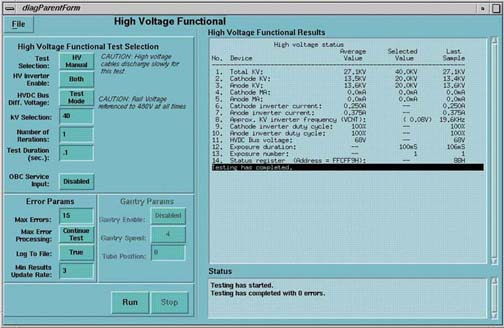
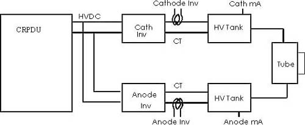

Proprietary to General Electric
Direction 5114043-800, Rev# 9
LightSpeed 3.X Service Methods (Advanced)
Proprietary to General Electric |
[SERVICE DESKTOP] -> [DIAGNOSTICS] -> [X-RAY GENERATION] -> [KV LOOP] -> [HV MANUAL]
Illustration 1: kV Diagnostic Screen

This diagnostic operating the KV inverters without mA and at low input voltages. This test does NOT require the connection of the x-ray tube. However, if the tube is disconnected, the HV cables should be connected to a bleeder or disconnected at the HV tanks.
This test should be run with the HVDC set to test mode (~75VDC) when the following errors are detected:
Over currents
Shoot-through
mA over currents.
Run test when a shorted x-ray tube or HV cables are suspected.
Look for where the current stops with the HVDC set to the test mode:
Inverter currents should be less than 1 to 2 amps of current
mA should be less than 2mA
High pot the tube (use bleeder) to remove the tube from the circuit and rerun the test.
Use HVDC test mode (~75VDC) to check for shorts. KV will NOT reach the prescribed value in this mode.
Normal rail voltage should only be used to test for dielectric breakdowns. Turn on one side (cathode/anode) at a time, since the bang-bang circuit was not designed for accurate KV loop control.
High potting the tube is very dangerous if not done correctly, even with the HVDC bus set to test mode.
Illustration 2: HVDC Test Setup
